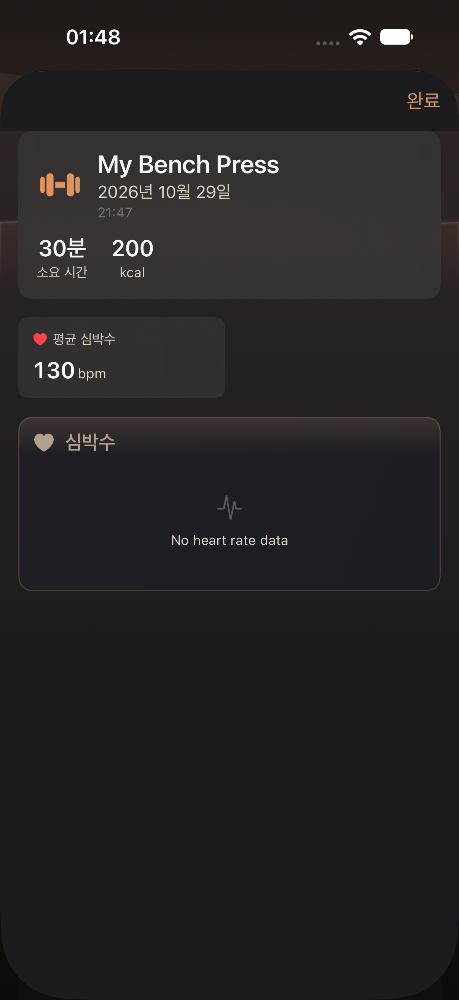
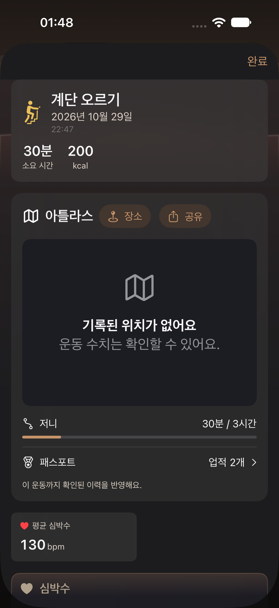
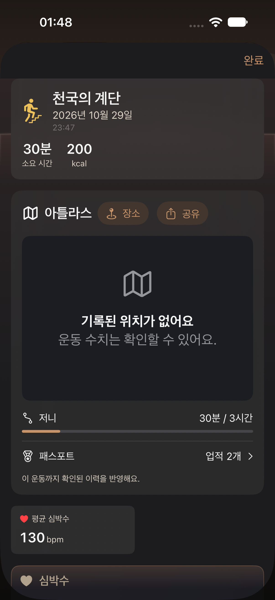
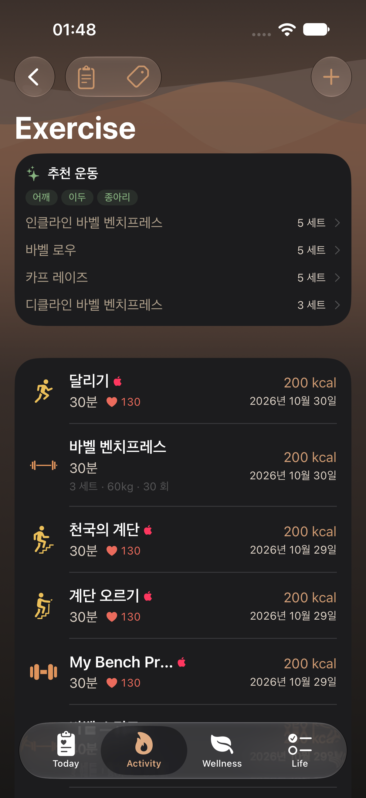
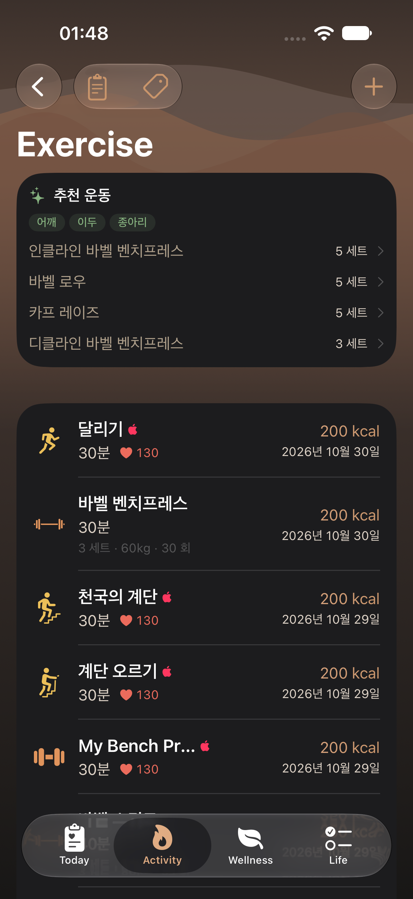

2026-10-30 · 한국어·어두움 · opt-in 예시 운동. 실제 사용자 기록이 아닙니다.
일반 운동명의 캐시 번역, 기구·실제 계단 표시 구분, 사용자 제목과 저장 원문 보존을 확인합니다.
iphone · default
Workout name audit custom detail

WorkoutNameAuditUITests/testGenericCorrectionsLocalizeAndMachineStairsRemainDistinct()
iphone · default
Workout name audit stairs detail

WorkoutNameAuditUITests/testGenericCorrectionsLocalizeAndMachineStairsRemainDistinct()
iphone · default
Workout name audit machine detail

WorkoutNameAuditUITests/testGenericCorrectionsLocalizeAndMachineStairsRemainDistinct()
iphone · default
Workout name audit Korean list

WorkoutNameAuditUITests/testGenericCorrectionsLocalizeAndMachineStairsRemainDistinct()
iphone · default
Workout name audit generic manual list

WorkoutNameAuditUITests/testManualGenericCodeIsNotRepeatedBelowLocalizedName()